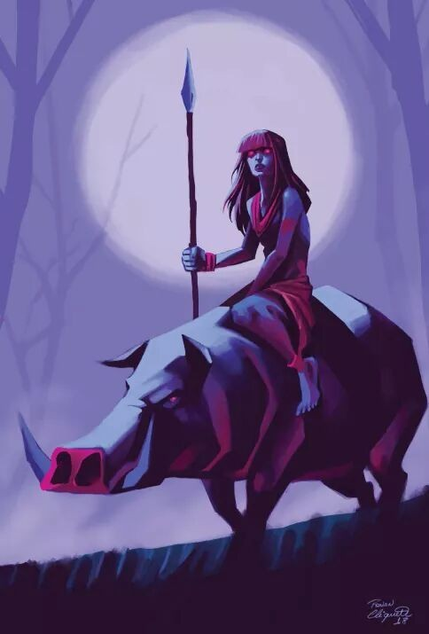
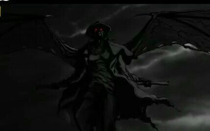
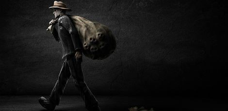
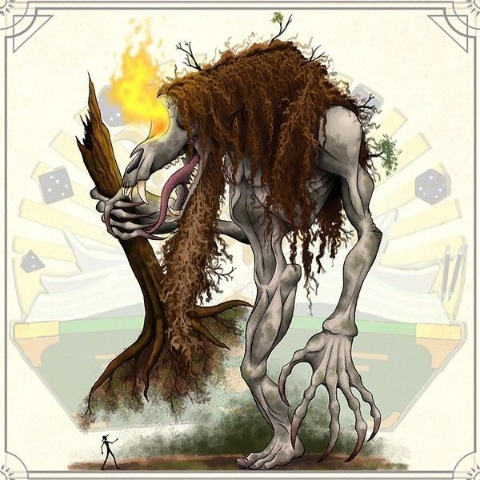
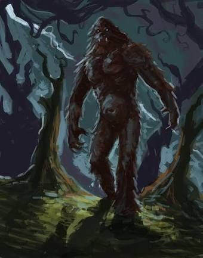
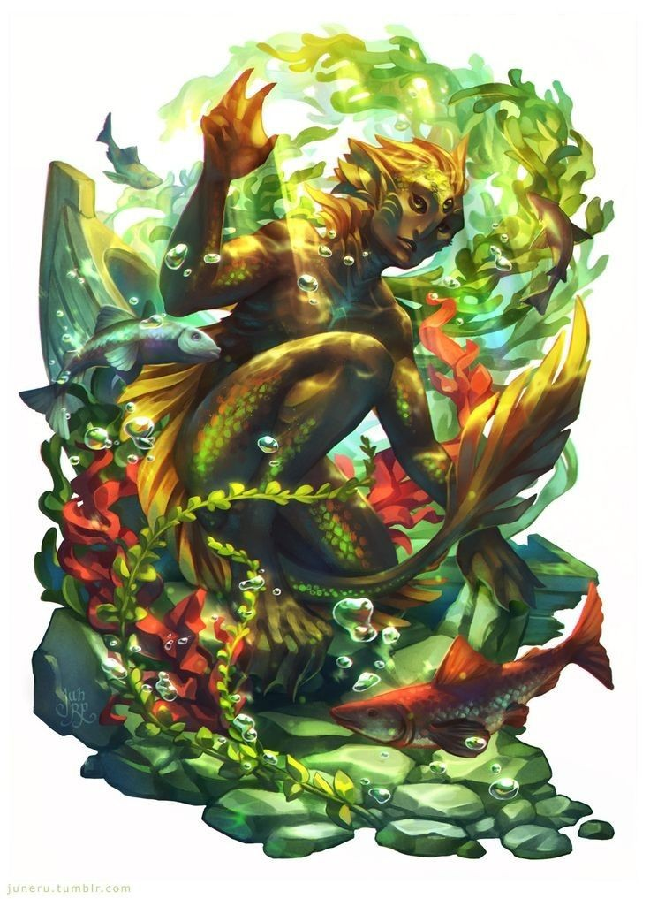
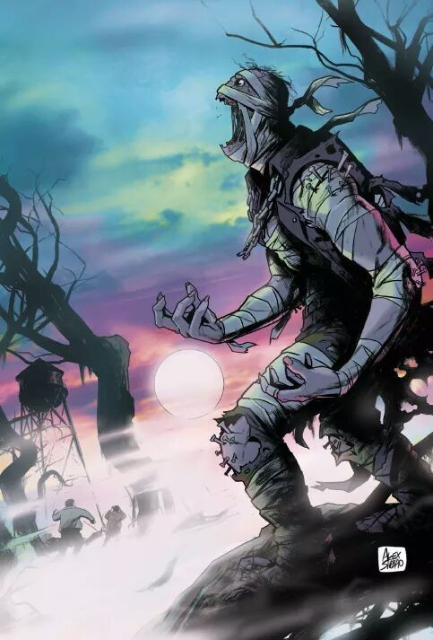
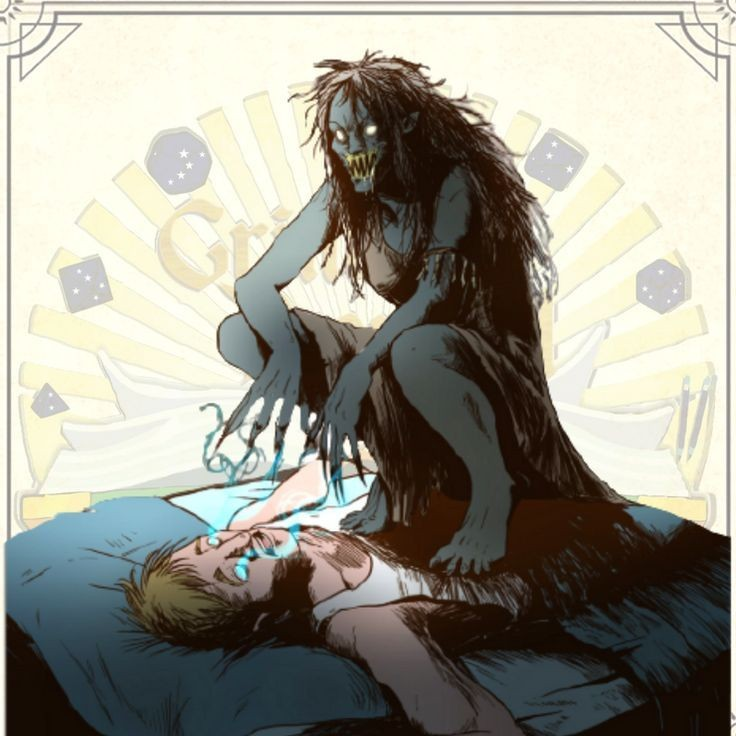
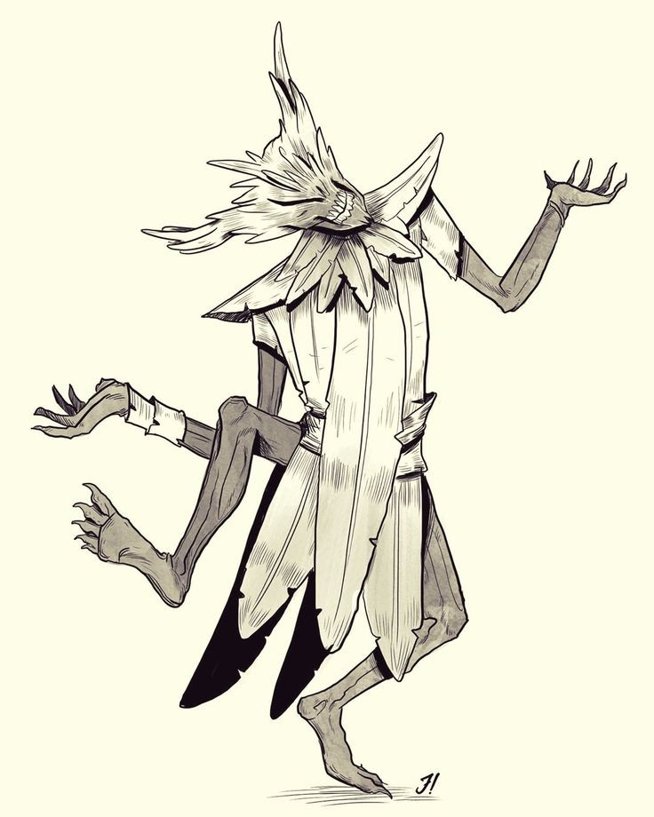
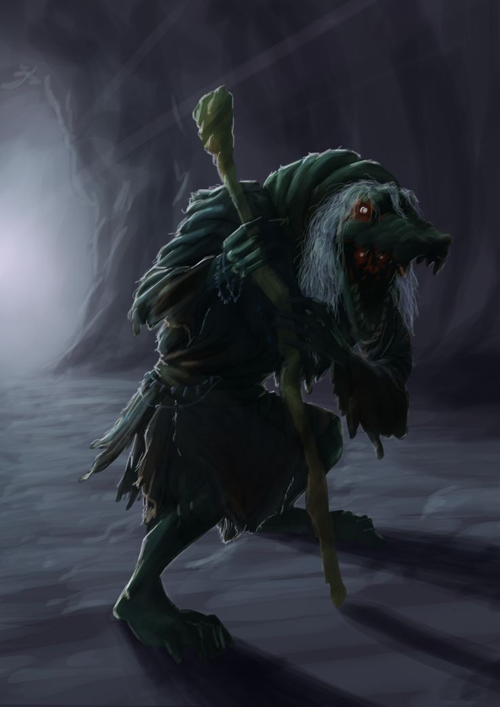

As criaturas mitológicas são seres criados por diversas culturas, seu propósito seria explicar a origem do mundo, bem como eventos naturais dos quais não se tinha entendimento, ou para passar lições importantes para a sociedade. Sejam monstros ou personagens da mitologia grega todos costumam ter histórias curiosas. Trata-se de um assunto amplo e intrigante, que atrai a curiosidade e o interesse de muita gente, principalmente devido ao sucesso de séries como Supernatural (2005-2020), Teen Wolf(2011-2017), e outros.
Falando nisso, você sabia que o folclore brasileiro conta com diversas criaturas igualmente interessantes?Cada região tem suas próprias lendas, algumas até se assemelham, mas cada uma conta com sua própria história de origem.Assim sendo, que tal falarmos mais a respeito e nos aprofundar em suas histórias e origens?
Mapinguari

Mapinguari é uma figura lendária da região amazônica, é descrita como sendo peluda como um macaco, bastante alta, tendo apenas um olho no meio da testa e a boca no lugar do umbigo.
A crença diz que alguns índios de idade avançada se transformam nesse monstro e vivem isolados na floresta emitindo gritos assustadores, sendo capazes de destruir tudo o que encontram no caminho, eles assustam e até devoram pessoas. Segundo a lenda, a única ameaça ao Mapinguari é o bicho-preguiça.
Boto-cor-de-rosa
Segundo a lenda, o boto-cor-de-rosa vive no rio Amazonas, de onde sai durante as festas populares da região, assumindo a aparência de um rapaz atraente e bem arranjado, usando um paletó branco e um chapéu - acessório usado para se tentar esconder o rosto e, principalmente, o seu nariz comprido, o boto passa a noite toda em forma humana, aproveitando para seduzir as moças, que acabam por engravidar. Ao amanhecer, volta a sua forma animal e retorna para o rio.
A lenda do boto é usada para justificar a gravidez de mulheres solteiras ou fora do casamento, assim surgindo o ditado popular “a criança é filho do boto”, utilizado para se referir a essas crianças.
Caipora

A Caipora é uma figura do folclore brasileiro, considerada a protetora dos animais e guardiã das florestas. Pode ser representada por um homem ou uma mulher, pois varia de acordo com a região em que a lenda é relatada.Sua origem está presente na mitologia indígena Tupi-guarani. Ao sentir que algum caçador entrou na floresta com intenções de abater animais, ela solta altos uivos e gritos assustando esses homens, porque é seu dever cuidar desses animais e proteger o ambiente. Dizem que sua força é maior nos dias santos e nos finais de semana.
Encourado

O Encourado é uma espécie de Vampiro presente no Folclore Brasileiro. Essa lenda conta a história de um homem que possui hábitos noturnos, além de usar uma roupa de couro preto como um cangaceiro, sendo que esta vestimenta fede à sangria. Gosta de se alimentar tanto de Seres Humanos, quanto de Animais. Dizem que ele só entra nas casas em que for convidado, no entanto, sempre dá um jeito de receber as boas graças do anfitrião.
Por muitos é descrito como sendo uma versão do próprio diabo e não há formas conhecidas de vencê-lo, mas pode-se evitar sua visita deixando uma oferenda na entrada da cidade.
Papa-figo

O Papa-figo é descrito como um homem velho, alto, de roupas sujas e desalinhadas. Conta-se que ele aparece de forma inesperada, “rouba” crianças de suas famílias, colocando-as num saco – e ainda pode comer o fígado (“figo”, na forma popular) daquelas que desobedecem os pais.
Também é conhecido como Homem do Saco ou Velho do Saco. Essa é uma lenda criada para alertar as crianças sobre os perigos de falar com desconhecidos pelas ruas e para incentivar sua obediência.
Comadre Fulozinha

A Comadre Fulozinha é um personagem tipicamente nordestino, conhecida por ter cabelos muito longos, sua principal “arma” é a língua, usada para enrolar suas vítimas, geralmente pessoas que destroem a mata ou passam por lá sem deixar oferenda.
Tendo uma personalidade similar à do Saci, Comadre Fulozinha é um pouco zombeteira e autora de muitas travessuras nas fazendas do Nordeste. De acordo com a lenda, as oferendas favoritas dessa entidade são doces e mingau.
Bicho-homem

O bicho-homem está presente em várias regiões do Brasil, sua figura é descrita como sendo a de uma criatura alta, quase um gigante, com um olho só no meio da testa, também um só pé redondo e enorme, que quando caminha vai deixando pelo chão pegadas redondas. Os dedos de suas mãos são compridos e disformes, as unhas longas e afiadas, e seus gritos assombram os moradores da região onde habitualmente se oculta. Aqueles que já o viram dizem que ele é muito grande, forte, e extremamente feroz é capaz de derrubar uma montanha a socos e unhadas, beber rios e transportar florestas. Vive escondido em locais de muitas serras e vales e é devorador de homens.
Arranca-Línguas

De acordo com a crença popular, o Arranca Línguas é um ser maligno que habita as matas e ataca pessoas que se aventuram em seus domínios. O objetivo desse ser sinistro é arrancar a língua das vítimas, deixando-as incapazes de falar ou pedir socorro. Sua crença data de meados de 1937, quando estranhos eventos, envolvendo animais mortos cujas linguas nao se envontravam, começaram a surgir no sertão de Goiás. Possui a aparência de um gorila gigante -muito influenciada pelo recente lançamento do filme King-Kong(1933). Tem o costume de atacar suas vítimas à noite, matando-as e retirando-lhes a língua para comer.
Negro-d'água

O Negro-d’água é uma espécie de bicho-homem peludo que vive nos rios, assustando pescadores e afundando embarcações. Também conhecido como Caboclo d’água em outras regiões é uma espécie de Saci-Pererê do rio, que vive fazendo travessuras com os pescadores.
Anda em bandos e, no fundo dos rios, há a cidade dos negrinhos d’água. Ás vezes, quando capturam um pescador, o leva para o fundo do rio para dar-lhe surra.
Bradador

O Bradador é uma alma penada que vive nos campos da região centro-sul do Brasil. Diz a lenda que o Bradador foi enterrado, mas como não havia pagado todos os seus pecados, a terra o devolveu. Assim, a múmia, ou este espírito que habita um corpo seco, sai vagando pelos matos todas as sextas-feiras, após a meia-noite. Testemunhas dizem que os berros parecem de uma pessoa agonizando, outras o descrevem mais como lamentos, seguidos de forte brados, daí o nome. Para que a terra o aceite de volta, ele terá que encontrar por sete vezes uma moça de nome Maria e assim ele poderá descansar em paz.
Pisadeira

A Pisadeira é descrita geralmente como uma mulher velha de chinelos, com dedos enormes e unhas compridas, que se esconde nos telhados e age soturnamente, aparecendo nas madrugadas para pisar fortemente no peito de quem dorme de barriga para cima e estômago cheio. Quando entra em ação, é implacável. Pisa com tanta força que a vítima sente falta de ar, fica indefesa, paralisada, incapaz de qualquer reação. Essa lenda é geralmente associada com a paralisia do sono, sendo usualmente usada para explicar a mesma.
Chibamba

O chibamba é uma lenda típica do Sudeste. Ela fala de uma espécie de bicho-papão que é atraído por crianças malcriadas.É descrito como um fantasma que se veste com folhas de bananeira, dança e tem um ronco assustador, parecido com o de um porco.
Cuca

A Cuca é uma bruxa com corpo de jacaré e cabelos amarelos. Sua voz é horrível e seu grito pode ser escutado a quilômetros de distância.
Ela vive numa caverna preparando feitiços e vigiando a floresta através do seu espelho mágico onde ela pode ver tudo o que está acontecendo.
A Cuca dorme uma noite a cada sete anos e por isso, está sempre atenta às crianças que não obedecem aos seus pais e aqueles que não dormem cedo. Dizem que ela sai pelas noites e vai pelas casas pegar os meninos e meninas que não dormem na hora certa.
Saci-pererê

Descrito como um menino negro e travesso, que fuma cachimbo e carrega uma carapuça vermelha que lhe concede poderes mágicos, sua principal característica é o fato de que ele possui apenas uma perna.O Saci-pererê é um personagem muito travesso que se diverte fazendo brincadeiras com os animais e com as pessoas.
De acordo com as histórias, as suas principais travessuras são fazer tranças no rabo dos animais durante a noite, esconder objetos, assobiar de maneira muito estridente para assustar os viajantes, trocar o recipiente de sal pelo de açúcar e distrair as cozinheiras para elas que queimem a comida.O Saci é o guardião das ervas e das plantas medicinais, por isso, confunde as pessoas que tentam pegá-las sem autorização,é conhecedor das técnicas de preparo e sabe como utilizar as plantas para fins medicinais.
A lenda garante que para capturar o Saci-pererê, a pessoa deve arremessar uma peneira nos redemoinhos de vento. Dessa maneira, após capturá-lo, é necessário retirar-lhe o gorro para prendê-lo em uma garrafa.
Acredita-se que o Saci nasceu do broto de bambu, permanecendo ali até os sete anos e, após esse período, vive mais setenta e sete anos praticando suas travessuras entre os humanos e os animais, ao morrer, torna-se um cogumelo venenoso.
Negrinho do Pastoreio

Conta-se que no tempo da escravidão havia um senhor cruel que maltratava os negros escravizados diante da menor falta. Certa vez, um dos seus escravos, um menino órfão, deixou escapar o cavalo preferido do senhor. Ele ficou furioso, mandou chicoteá-lo e ordenou que fosse colocado em cima de um formigueiro.
O menino passou a noite chamando por Nossa Senhora da Conceição, sua madrinha, para que o livrasse daquelas dores. Enquanto o fazendeiro não conseguia dormir, levantou-se e ficou intrigado quando viu uma forte luz no terreiro,rapidamente, ele foi até o local e ficou surpreso ao encontrar o menino espantando as últimas formigas do seu corpo. Ao seu lado, estava Nossa Senhora e do outro, relinchava o cavalo que tinha sido perdido. O menino olhou para o seu antigo senhor, montou no cavalo baio, sorriu para a Virgem e saiu cavalgando.
Dizem que o senhor se arrependeu de suas maldades e até hoje é possível ouvir o Negrinho do Pastoreio cuidando dos animais que se afastam do rebanho e ajudando as pessoas a encontrar objetos perdidos.